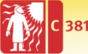
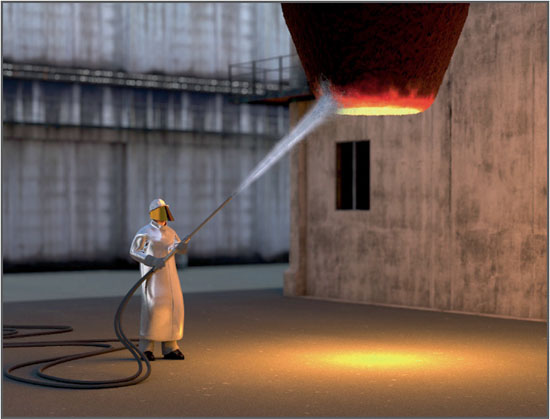
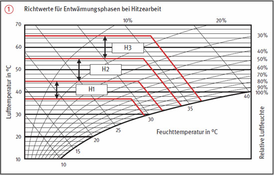
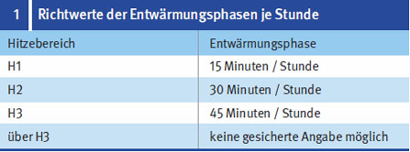

Arbeiten unter Hitzeeinwirkung im Feuerfestbau (Hitzearbeiten)


Gefährdungen
Bei Tätigkeiten im Feuerfestbau besteht die Gefahr des Verbrennens oder Verätzens durch Gase oder Brennmaterial.
Die Hitzeeinwirkung kann extrem belastend für den Kreislauf sein. Infolge des Wasserverlustes durch Schwitzen kann es zur Dehydratation des Körpers kommen.
Intensive Wärmestrahlung kann schwere Augenschäden (Feuerstar) hervorrufen.
Allgemeines
Die Hitzebelastung des Menschen hängt von der Lufttemperatur, aber auch von der Luftfeuchtigkeit, der Luftgeschwindigkeit und der Wärmestrahlung ab. Weiterhin sind die Schwere der körperlichen Arbeit, die Dauer der Arbeit und die Bekleidung wichtig.
Man kann im Allgemeinen davon ausgehen, dass eine Hitzebelastung vorliegt,
wenn bei einer Temperatur über 30 °C eine Tätigkeit länger als 60 Minuten ausgeführt wird,
wenn bei kurzer Expositionszeit bis 30 Minuten und leichter körperlicher Arbeit die Temperatur bei 36 °C liegt.
Zur Bewertung der Hitzebelastung ist eine Einstufung des Arbeitsplatzes unter Verwendung des WBGT-Indexes (DGUV Information 213-002) erforderlich.
Mit den Arbeiten erst beginnen, wenn gesundheitsschädliche Hitzeeinwirkungen so weit wie möglich ausgeschlossen sind.


Schutzmaßnahmen
Technische und organisatorische Maßnahmen
Arbeitsplätze durch örtliche Belüftung oder Allgemeinbelüftung kühlen.
Oberflächentemperatur durch Kühlung, Drosselung der Energiezufuhr oder Dämmung herabsetzen.
Heiße Oberflächen durch Umwehrung oder Absperrung gegen Berühren sichern.
Wärmestrahlung durch Kettenvorhänge, Hitzeschutzschirme, Drahtgewebe oder Reflexionsanstriche abschirmen.
Möglichst automatisierte oder ferngesteuerte Arbeitsverfahren anwenden.
Arbeiten unter Hitzeeinwirkung auf ein Minimum beschränken.
Bei schwerer körperlicher Arbeit muss nach 60 Minuten eine Pause eingelegt werden.
Je nach Hitzebelastung häufige Entwärmungszeiten von mindestens 10 Minuten Dauer einhalten. Die Entwärmungszeiten sind gemäß Abbildung und Tabelle 1 zu ermitteln. Als zweckmäßig hat sich ein Temperaturbereich von 25 bis 35 °C erwiesen, in dem die Entwärmungszeit verbracht wird.
Bei Hitzearbeiten muss der Aufsichtführende ständig anwesend sein.
Persönliche Maßnahmen
Bei Hitzearbeiten – je nach Art und Intensität der Einwirkung – Hitzeschutzkleidung benutzen.
Erforderlichenfalls zusätzlich
Sicherheitsschuhe mit wärmeisolierendem Unterbau (Hitzeschuhe) und
Schutzhelme mit Schale aus Duroplasten und hitzebeständiger Innenausstattung benutzen.
Schutzbrillen mit UV- und Infrarot-Schutz bei längerem Blick in Heißbereiche benutzen.
Keine Wäschestücke und Kleidung aus Kunststoff-Fasern tragen.
Durch Schwitzen verursachte Verluste an Flüssigkeit und Mineralsalzen durch ausreichende Einnahme ungekühlter, kohlensäurearmer, alkohol- und koffeinfreier Getränke ausgleichen. Die Getränke sind vom Unternehmer zur Verfügung zu stellen.
Arbeitsmedizinische Vorsorge
Arbeitsmedizinische Vorsorge nach Ergebnis der Gefährdungsbeurteilung veranlassen (Pflichtvorsorge) oder anbieten (Angebotsvorsorge). Hierzu Beratung durch den Betriebsarzt.